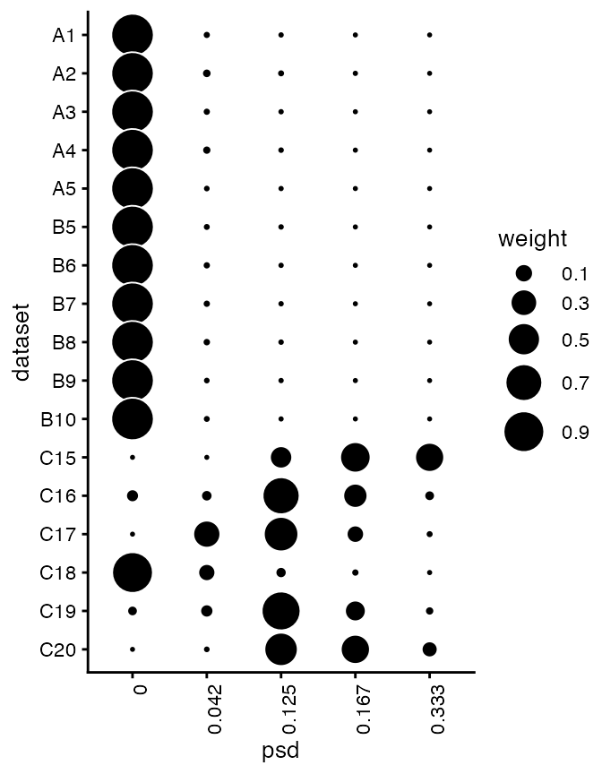
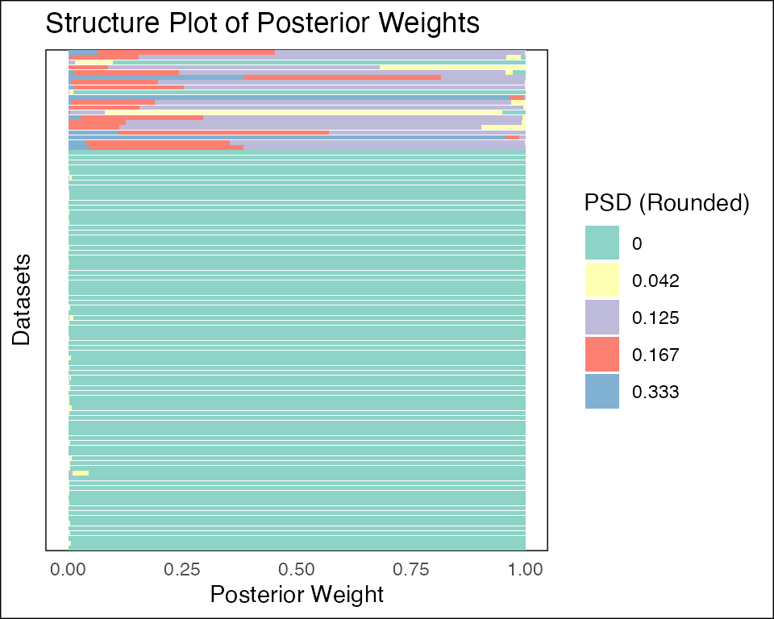
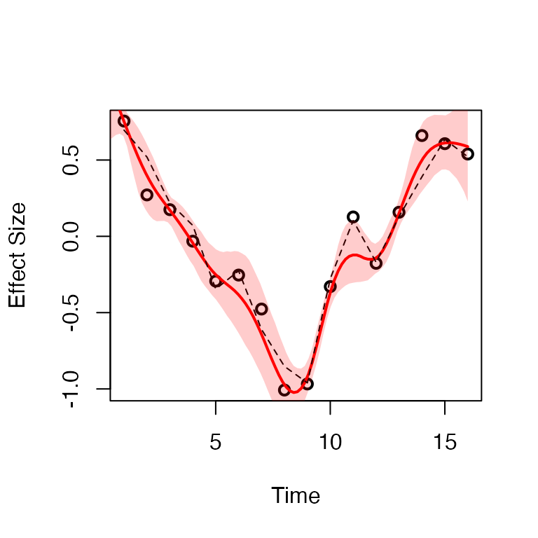
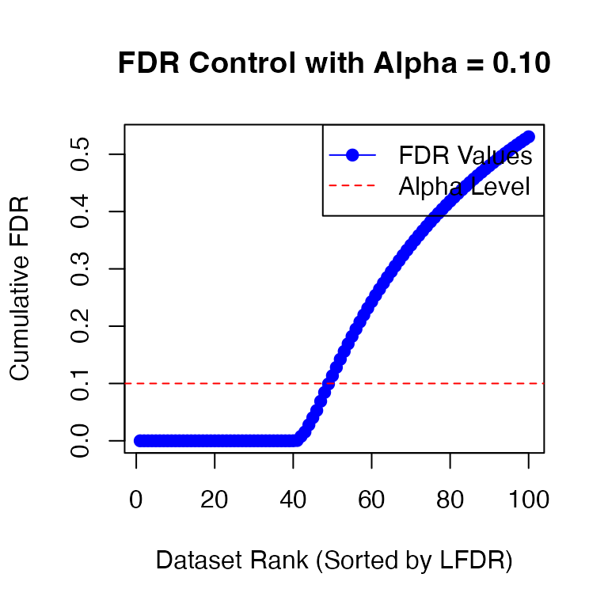

knitr::opts_chunk$set(fig.width = 8, fig.height = 6)
library(fashr)Setup
We consider the effect size estimate of eQTLs measured in day to day :
- there are eQTLs that are not dynamic, i.e., the effect size is constant over time (Category A).
- there are eQTLs that are linear dynamic, i.e., the effect size is changing linearly over time (Category B).
- there are eQTLs that are non-linear dynamic, i.e., the effect size is changing non-linearly over time (Category C).
Let’s take a look at the data structure:
length(datasets)## [1] 100
str(datasets[[1]])## 'data.frame': 16 obs. of 4 variables:
## $ x : int 1 2 3 4 5 6 7 8 9 10 ...
## $ y : num -0.0611 0.0756 0.039 -0.0311 -0.4429 ...
## $ truef: num 0 0 0 0 0 0 0 0 0 0 ...
## $ sd : num 0.2 0.05 0.1 0.05 0.2 0.2 0.1 0.1 0.2 0.2 ...Take a look at the true label of the datasets:
table(labels)## labels
## A B C
## 50 30 20Fitting FASH
The default way of fitting FASH is to input the list of datasets
(data_list), and specify the column names for the effect
size (Y), the standard deviation of the effect size
(S), and the time points (smooth_var).
The computation could be paralleled by specifying the number of cores
(num_cores). Reducing the number of basis functions
(num_basis) can also greatly speed up the computation.
Testing non-linearity
Let’s first use the IWP2 model (order = 2), and try to
detect the dynamic eQTLs with non-linear dynamics (Category C).
fash_fit <- fash(Y = "y", smooth_var = "x", S = "sd", data_list = datasets,
likelihood = "gaussian", order = 2, pred_step = 1,
num_cores = 2, num_basis = 20, grid = seq(0, 1, by = 0.025),
verbose = TRUE)## Starting data setup...
## Completed data setup in 0.01 seconds.
## Starting likelihood computation...
## Completed likelihood computation in 12.03 seconds.
## Starting empirical Bayes estimation...
## Completed empirical Bayes estimation in 0.01 seconds.
## fash object created successfully.
fash_fit## Fitted fash Object
## -------------------
## Number of datasets: 100
## Likelihood: gaussian
## Number of PSD grid values: 41 (initial), 6 (non-trivial)
## Order of Integrated Wiener Process (IWP): 2Let’s take a look at the estimated prior:
fash_fit$prior_weights## psd prior_weight
## 1 0.000 0.81369365
## 2 0.025 0.01755264
## 3 0.125 0.11104094
## 4 0.175 0.02131837
## 5 0.200 0.01002227
## 6 0.350 0.02637213We can take a look at their posterior weights in each GP component:
plot(fash_fit)
The plot function automatically plots the posterior
weights of the GP components, with darker colors indicating larger PSD
(e.g. larger
).
The observations are ordered based on posterior mean of the PSD
(i.e. )
in descending order from top to bottom. We could also customize the plot
in various different ways:
plot(fash_fit, discrete = TRUE, ordering = "lfdr")
The above structure plot ignores the continuous structure of the PSD
(discrete = TRUE) and orders the observations based on the
local false discovery rate (LFDR) of
.
In this case, since the order of IWP is p = 2, the base
model
denotes the space of linear function.
We can then use fdr_control to test the null hypothesis
that
at a given FDR level:
fdr_result <- fdr_control(fash_fit, alpha = 0.1, plot = TRUE)## 20 datasets are significant at alpha level 0.10. Total datasets tested: 100.
There are 21 eQTLs flagged as significant at FDR level 0.1. We can take out the indices of these eQTLs:
detected_indices <- fdr_result$fdr_results$index[fdr_result$fdr_results$FDR < 0.1]How many of the true (non-linear) dynamic eQTLs are detected?
sum(labels[detected_indices] == "C")/sizeC## [1] 0.95What is the false discovery rate?
## [1] 0.05Let’s take a look at the inferred eQTL effect for the detected eQTLs.
## 'data.frame': 16 obs. of 5 variables:
## $ x : int 1 2 3 4 5 6 7 8 9 10 ...
## $ mean : num 0.7521 0.3925 0.1712 -0.0469 -0.2553 ...
## $ median: num 0.7526 0.3991 0.1708 -0.0477 -0.2585 ...
## $ lower : num 0.6575 0.1543 0.0765 -0.1963 -0.4183 ...
## $ upper : num 0.8486 0.602 0.2677 0.1074 -0.0902 ...The predict function returns the posterior information
of the effect size
for the eQTL specified by index. By default, it returns the
posterior of the effect size at each observed time point. We can also
specify the time points to predict the effect size at:
fitted_beta_new <- predict(fash_fit, index = detected_indices[1], smooth_var = seq(0, 16, length.out = 100))
str(fitted_beta_new)## 'data.frame': 100 obs. of 5 variables:
## $ x : num 0 0.162 0.323 0.485 0.646 ...
## $ mean : num 1.162 1.096 1.03 0.963 0.897 ...
## $ median: num 1.147 1.083 1.02 0.956 0.893 ...
## $ lower : num 0.568 0.594 0.613 0.635 0.659 ...
## $ upper : num 1.84 1.67 1.5 1.32 1.16 ...It is also possible to store M posterior samples rather than the posterior summary:
fitted_beta_samples <- predict(fash_fit, index = detected_indices[1],
smooth_var = seq(0, 16, length.out = 100),
only.samples = TRUE, M = 50)
str(fitted_beta_samples)## num [1:100, 1:50] 1.012 0.974 0.937 0.899 0.862 ...Let’s plot the inferred effect size for the first detected eQTL:
plot(datasets[[detected_indices[1]]]$x, datasets[[detected_indices[1]]]$y, type = "p", col = "black", lwd = 2, xlab = "Time", ylab = "Effect Size")
lines(fitted_beta_new$x, fitted_beta_new$mean, col = "red", lwd = 2)
lines(datasets[[detected_indices[1]]]$x, datasets[[detected_indices[1]]]$truef, col = "black", lwd = 1, lty = 2)
polygon(c(fitted_beta_new$x, rev(fitted_beta_new$x)), c(fitted_beta_new$lower, rev(fitted_beta_new$upper)), col = rgb(1, 0, 0, 0.2), border = NA)
Testing dynamic eQTLs
What if we are interested in detecting any dynamic eQTLs, not just the non-linear ones? (i.e., Categories B and C)
We can specify the order of the IWP model to be 1, which will setup a base model as the space of constant functions.
fash_fit_2 <- fash(Y = "y", smooth_var = "x", S = "sd", data_list = datasets,
likelihood = "gaussian", order = 1, pred_step = 1,
num_cores = 2, num_basis = 20, grid = seq(0, 1, by = 0.025),
verbose = TRUE)## Starting data setup...
## Completed data setup in 0.01 seconds.
## Starting likelihood computation...
## Completed likelihood computation in 9.82 seconds.
## Starting empirical Bayes estimation...
## Completed empirical Bayes estimation in 0.01 seconds.
## fash object created successfully.
fash_fit_2## Fitted fash Object
## -------------------
## Number of datasets: 100
## Likelihood: gaussian
## Number of PSD grid values: 41 (initial), 9 (non-trivial)
## Order of Integrated Wiener Process (IWP): 1Take a look at the structure plot:
plot(fash_fit_2, discrete = TRUE, ordering = "mean")
Let’s test the null hypothesis that at a given FDR level:
fdr_result_2 <- fdr_control(fash_fit_2, alpha = 0.1, plot = TRUE)## 48 datasets are significant at alpha level 0.10. Total datasets tested: 100.
detected_indices_2 <- fdr_result_2$fdr_results$index[fdr_result_2$fdr_results$FDR < 0.1]How many of the true dynamic eQTLs are detected?
sum(labels[detected_indices_2] != "A")/(sizeB + sizeC)## [1] 0.88What is the false discovery rate?
## [1] 0.08333333